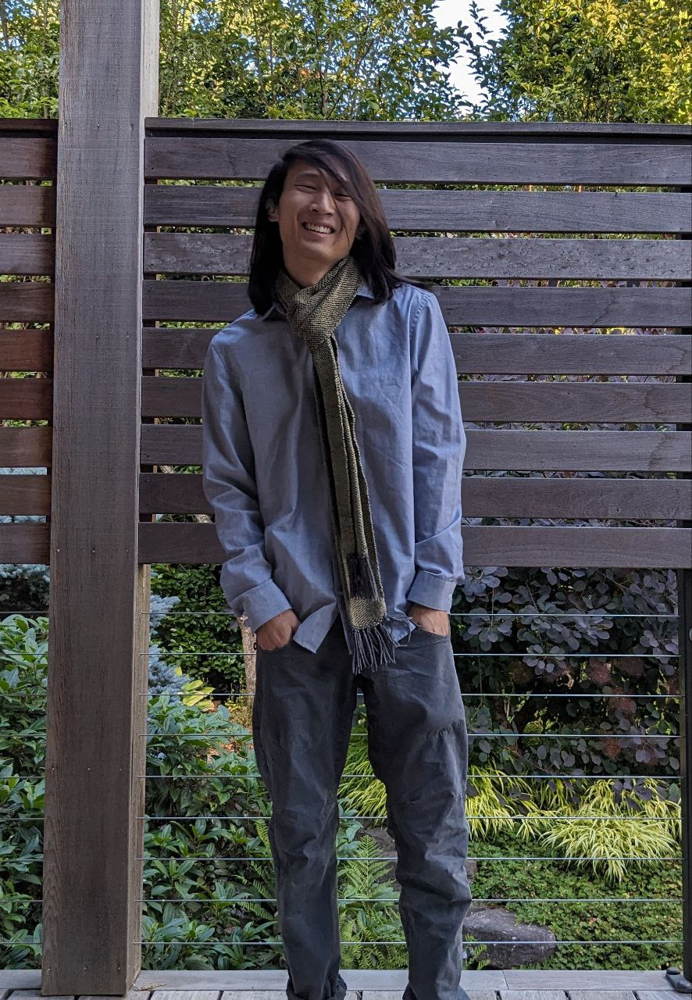

Christopher Lam

I am a third year PhD student in computer science at the University of
Illinois at Urbana-Champaign, advised by Talia Ringer. Previously,
I was an undergraduate at Cornell University, where I worked under Dexter Kozen and Pedro H. Azevedo de Amorim on differentiable programming
semantics, the latter of whom created this website template.
At the moment, I am primarily interested in programming languages, formal verification, and logics. More
specifically, I'm interested in Program Equivalence, Proof Transformations, Category
Theory, Type Theory, and Programming Language Semantics.
June 2024 Serbed on the AV team for PLDI 2024
May 2024 Our paper Correctly Compiling Proofs About Programs Without Proving Compilers Correct will appear at ITP 2024!
May 2024 Attended the Haussdorf Institute for Mathematics special trimester on Prospects of Formal Mathematics!
January 2024 Served on the AV team for POPL 2024
September 2023 Attended ICFP!
July 2023 Our preprint Correctly Compiling Proofs About Programs Without Proving Compilers Correct is now on the available!
June 2023 Attended the Coq users and developers workshop!
April 2023 Passed my qualifying exam!
March 2023 Took my qualifying exam
January 2023 Attended POPL!
July 2022 Our preprint Distribution Theoretic Semantics for Non-Smooth Differentiable Programming is now on the arXiv!
July 2022 Visited Galois!
June 2022 Attended OPLSS!
August 2021 Started my PhD!
Distribution Theoretic Semantics for Non-Smooth Differentiable Programming
Pedro H. Azevedo de
Amorim and Christopher Lam
[preprint]
Semantics for a Simple Differentiable Language Using Distribution Theory
Christopher Lam
ICFP
2020 (online), SRC. [Talk]
Correctly Compiling Proofs About Programs Without
Proving Compilers Correct
Audrey Seo*, Chris Lam*, Dan Grossman, Talia Ringer
To appear at ITP 2024
[preprint]
* denotes co-first authorship
Fall 2021 Teaching Assistant for CS 421 : Programming Languages and Compilers
Spring 2021 Teaching Assistant for CS4820 : Introduction to Analysis of Algorithms
Fall 2020 Teaching Assistant for CS4820 : Introduction to Analysis of Algorithms
Spring 2020 Teaching Assistant for CS3110 : Data Structures and Functional Programming
Fall 2019 Teaching Assistant for CS3110 : Data Structures and Functional Programming
Spring 2019 Teaching Assistant for CS1110 : Introduction to Computing Using Python
AV team: POPL '24, PLDI '24
Student Volunteer: ICFP '23
Subreviewer: POPL '24